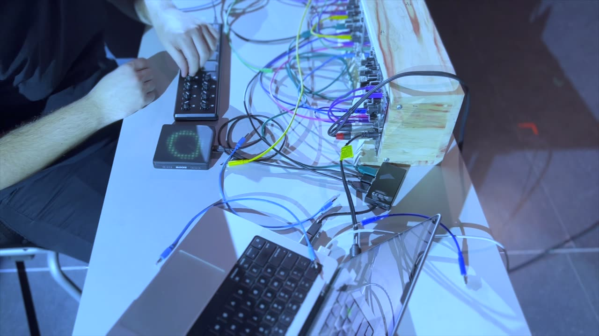
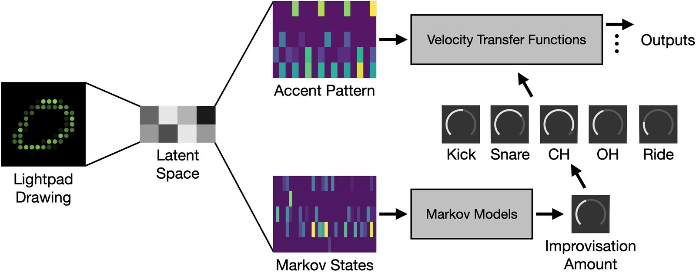
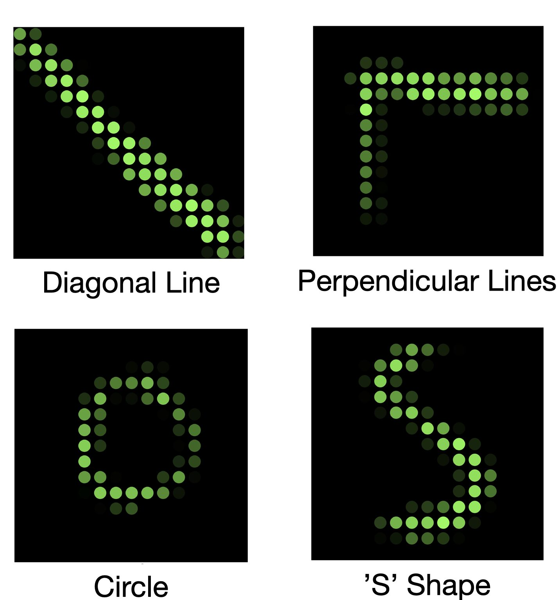
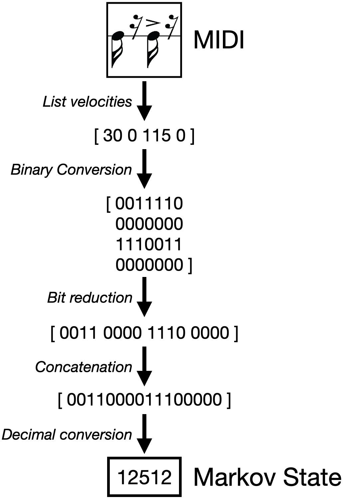
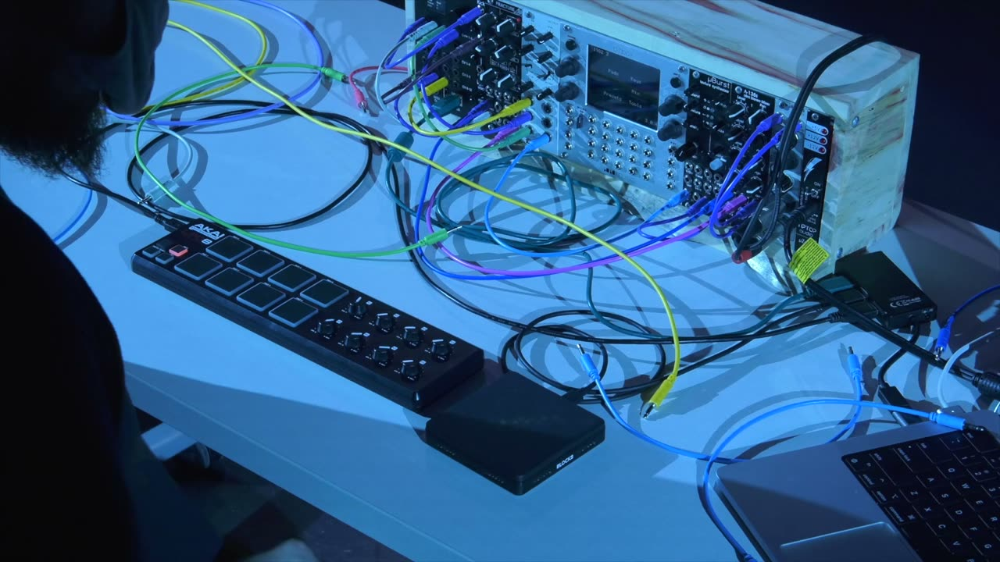

Latent Drummer: A New Abstraction for Modular Sequencers
Abstract
Automated processes in musical instruments can serve to free a performer from the physical and mental constraints of music performance, allowing them to expressively control more aspects of music simultaneously. Modular synthesis has been a prominent platform for exploring automation through the use of sequencers and has therefore fostered a tradition of user interface design utilizing increasingly complex abstraction methods. We investigate the history of sequencer design from this perspective and introduce machine learning as a potential source for a new type of intelligent abstraction. We then offer a case study based on this approach and present Latent Drummer, which is a prototype system dedicated to integrating machine learning-based interface abstractions into the tradition of sequencers for modular synthesis.
Author Keywords
Abstraction, Automation, Machine Learning, Markov Model, Sequencer, Variational Autoencoder
CCS Concepts
•Applied computing → Sound and music computing; Performing arts; •Human-centered computing → Gestural Input•Computing methodologies → Machine Learning
Introduction
The introduction of the first automated musical instruments inspired many to envision a world without human musicians [1][2]. Among the most vocal supporters of such a trend, Hanz Stuckenschmidt embarked on a journalistic effort to popularize so-called mechanical music. Insisting upon the full replacement of the human in musical performance, Stuckenschmidt argued that the musical instrumentalist would soon become a "stuff of legend" [3]. The music critic Edwin Evans, on the other hand, viewed automation as a way to give the performer further expressive control over music: "It is a fascinating dream of the future which shows us a performer, unhampered by all merely muscular preoccupations, giving us on one instrument all the subtle and variegated beauty of the musical landscape" [4].
In this paper, we explore two ways in which a human-centered approach to musical automation can be realized. First, we look at the state-of-the-art in intelligent musical systems with a focus on automation and interaction. We show how deep generative neural networks such as Variational Autoencoders have made headway in the development of autonomous musical systems and intuitive interaction methods. Second, we detail the history of automation in modular synthesizers, exploring techniques for further abstraction of control. We then argue for the integration of intelligent musical systems into modular synthesizers and introduce a case study designed to evaluate this possibility. In this case study, we present a highly abstract, autonomous sequencer that leverages machine learning to allow users to program drum patterns for modular synthesizers via gestural drawing input.
Intelligent Musical Systems
The past decade has seen a popularization of Machine Learning (ML) and Deep Learning techniques due to the increased availability of relevant software libraries, such as TensorFlow and Keras, and consumer-grade processing units that can perform these techniques. Previous research has focused on the use of ML algorithms for the interpretation of highly intuitive, abstract musical interfaces [5][6]. Notably, Rebecca Fiebrink's Wekinator allows for the training of a neural network to interpret any number of inputs, including video and depth cameras [7]. Here, we provide an overview of the ML-driven projects that we deem closely related to the tools and techniques presented in this paper.
Automation
The use of digital computation for music generation has a rich history. Hiller and Isaacson's "The Iliac Suite for String Quartet" [8], written in 1957, pioneered the use of Markov Models in music. These models are effective for generating music within a particular style due to their ability to implicitly learn the musical rules a given training dataset follows through simple probability [9][10]. Markov models can be trained on many different types of musical information at various levels of abstraction. For instance, Miranda describes the use of Markov models for music composition on a note-by-note level [11]. Verbeurgt et al. use Markov models to compose new music in the style of Bach by modeling transitions between multi-note subsequences [12].
Abstraction
Variational Autoencoders (VAEs) have also been found effective for generating new musical material in recent years. Autoencoders are neural networks which seek to compress an input dataset into a relatively small parameter space, referred to as the latent space. VAEs are a type of autoencoder that add a level of stochasticism through the plotting of encoded data as normal distributions in the latent space [13]. The Latent Mappings project demonstrates an application of VAEs in generating mappings between expressive human gesture and musical parameters. In this project, motion capture data from a dancer's movements were encoded into a 16-parameter latent space. Visualizations and sonifications of this latent space were used to demonstrate a highly abstract correlation between the dancers' motions and the encoded parameters. When mapped to musical parameters, this correlation taps into a visceral manifestation of expressiveness that goes deeper than semantic labels [14].
Similarly, the AI-terity uses a Generative Adversarial Network to map a user's interactions with a physical artifact to the parameters of a granular synthesizer, allowing the user to exert physical effort, as if they are literally warping and stretching sound itself [15]. This project leverages Principal Component Analysis (PCA) as a tool for interacting with the latent space of a network. Using PCA, one can reference their location within latent space relative to vectors representing the most consequential changes in the output of a network, rather than traveling unguided through the space.
Automation and Abstraction in Modular Synthesis
Here, we look at how automation and abstraction emerged and evolved in the modular synthesizer idiom. The first modular synthesizers, invented in the 1960s, represented a major leap forward in musical automation. The use of electrical signals to both generate and control sound blurred the distinction between automating a musical process and performing it. Allowing automation to be defined and altered in real time, these electronic devices went beyond playing back pre-composed material and began to cultivate new means of musical control. The sequencer exemplified this new form of automation and quickly became a mainstay in early modular synthesis systems, including the original Buchla 100 [16] and Moog Synthesizer 1c systems [17].
While innovation in modular synthesis remained stagnant for some time following the 1970s, the recent resurgence of the platform has brought with it an explosion of new sequencers. Although some sequencers remain similar to the original designs, the increased computational power of embedded systems has allowed designers to reformulate the performer’s relationship with their instrument. New sequencer designs have primarily focused on introducing layers of abstraction that relinquish user control over the minutiae of musical decision making to the sequencer. To identify both modern and historical trends in the use of interface abstractions in modular sequencers, we analyzed a range of modules1. From this analysis, we identified two main approaches to interface abstraction in modular sequencers: deterministic and stochastic.
Deterministic Abstractions
The first approach is a stacking of increasingly complex layers of deterministic computation between the user interface and the resulting sequence. Such deterministic abstraction is exemplified by the RYK M185 and its descendants, such as the Intellijel Metropolix. This family of sequencers add the ability to change the length and rhythm of the steps on an otherwise traditional sequencer using simple rules. The sequences created with such a module range from traditional patterns to long strings of deceptively complex syncopation. Furthermore, the rule-based mapping to rhythm obscures note-by-note control, freeing the user to think more fluidly about meter and syncopation.
Another notable example of deterministic abstraction is Euclidean rhythms, which were first described by Godfried Toussaint [18]. Euclidean rhythms, which are generated by evenly distributing a desired number of notes throughout a given number of steps, have been used in sequencers such as Euclidean Circles and Pamela’s New Workout. Rather than defining precise rhythms, Euclidean sequencers allow users to focus simply on the density of the rhythmic output.
Stochastic Abstractions
The second notable approach to interface abstraction for modular sequencers is adding a level of stochasticism to the mapping of input to output. Many of the most popular contemporary sequencers feature powerful examples of this in the form of per-step probability controls. Winter Modular’s Eloquencer integrates this into a classic step sequencer design, giving the user the ability to define the probability that a given parameter will change at each step. Furthermore, Eloquencer provides control over the range of values within which random processes occur and an ability to randomize any number of parameters with a single action. Music Thing Modular’s Turing Machine has become another popular choice for generating random sequences. In this design, a single knob is used to control the generation of a random sequence and then subsequently ‘lock it in’, stopping the randomization process and looping the most recent series of steps. Marbles by Mutable Instruments is a powerful descendant of the Turing Machine that adds further control over clock timing, voltage ranges and quantization on top of looping of random events.
Latent Drummer
Even with the power of modern sequencer abstractions, performance on modular synthesizers can become more a challenge of coordination than an opportunity for musical expression. Beyond a certain level of complexity, an interface abstraction can fail to provide simplicity and expressiveness at the same time. We believe that the integration of intelligent models into the sequencer idiom can enable the implementation of intuitive abstractions that allow the user to control a complex parameter space with simple expressions.
Our research has allowed us to identify promising techniques and paradigms from both machine learning and modular sequencer design, which can be used to guide the design of an intelligent sequencer abstraction. Research done on machine learning for musical systems has specifically highlighted the usefulness of Variational Autoencoders for both automation and interface abstraction. Markov Models have also proven useful for automation and are relatively lightweight models which can be easily computed in real time. From existing modular sequencers, we have learned the importance of striking a balance between deterministic and stochastic abstractions. Additionally, some specific techniques have provided direct inspiration. Most notably, these include the beat-by-beat substep patterns of the RYK M185 and the density controls of Euclidean sequencers. Here, we present Latent Drummer, a prototype system that is designed to integrate these techniques and considerations into a single, intelligent sequencer. Video 1 offers an overview of this system.

▶An overview of Latent Drummer (https://youtu.be/QjPbZXSwgrA)
System Overview
The core of Latent Drummer is a classic 16-step drum sequencer with five channels. To extend this, our system utilizes a Variational Autoencoder (VAE) to generate drumming styles and a set of Markov Models to improvise within the generated style. As mentioned earlier, the VAE is a type of neural network that seeks to encode the important aspects of an input dataset into a lower-dimensional latent space, which is then decoded into some useful output. We use a VAE in Latent Drummer to create the stylistic information necessary to drive real time playback, including training data for a Markov Model based-improviser. Markov Models are relatively simple machine learning models which learn a set of probabilities that a given state will transition to any other state in a training dataset. The model is then able to recreate similar chains of states in real time using those probabilities. The user is given a Roli Lightpad and a set of knobs, through which they can guide pattern generation, improvisation amount, and the overall density of each channel's output2. See Image 1 for an overview of the system architecture.


Complete interaction and generation architecture for Latent Drummer
Variational Autoencoder
A 2-Dimensional Convolutional VAE with two decode branches is utilized to generate drumming and improvisation styles for Latent Drummer. The VAE was trained to encode simple drawings created on a Roli Lightpad into an 8-dimensional latent space. These drawings are matrices of size [100, 100] consisting of binary values. The network was trained on roughly 2000 drawings, 500 each of four simple shapes. Examples of these shapes can be seen in Image 2. These drawings were chosen to represent a set of primitives, from which the network might gather information on implicit parameters such as angularity, size, and complexity.


Four types of drawings used to train the encoder
The two branches of the decoder were both trained on processed versions of MIDI recordings found in Google's Groove dataset [19]. A subset of these recordings was first chosen by hand. To be included in the dataset, a given recording must be a 16th-note based groove in 4/4 time and be 8 or more measures long. These requirements ensured the VAE could easily generate coherent drum patterns with enough information to inform an improvisational style. The selected recordings were then quantized to the 16th note. All notes referencing the same drum were collapsed onto one. Notes played on drums other than those the sequencer is designed to play were eliminated. The first of the decoders was trained on one-measure samples of the quantized recordings, represented as 5-by-16 matrices containing standard MIDI velocities. The matrices it generates are of the same size and are used as the foundational accent patterns of the generated sequence.
The second decoder was trained to generate training data for a Markov model in the sequencer's improviser. This decoder was trained on eight-measure samples of states similar to the gate patterns found on the RYK M185 sequencer. The process for generating these states is shown in Image 3. The encoding of each beat in this format places significant emphasis on the earlier subdivisions. This was found to help the network maintain a sense for where the most important parts of a pattern lie. Especially in the case of the kick and snare drum, beats with notes on the downbeat are generally considered more important than those with only syncopated notes, even when the syncopation is at a higher velocity.


Conversion of MIDI recordings to Markov states
Markov Improviser
Once an accent pattern and series of Markov states are generated, they are combined with user input to generate the sequence in real time. Without improvisation, the foundational accent pattern is sent directly to a set of user-controllable thresholds. Inspired by the Mutable Instruments Grids, the ‘Density’ knobs allow the user to manipulate the value of each channel’s threshold. Velocities in the accent pattern at or above the threshold are passed through and scaled appropriately.
The output of the second decoder of the VAE dictates the size and contents of a first-order Markov chain, which adds improvisation to the generated sequence. Every drum part has its own Markov transition matrix derived from its corresponding row in the output matrix. Each beat, the model selects its next state, which is used as a control signal to manipulate the density parameter automatically. While a separate Markov Model exists for every drum, a single 'Improvisation Amount' knob controls how much the improvisation affects all of the densities.
Evaluation
To assess the performance of the Latent Drummer, we followed an iterative process of design and evaluation over the course of 3 months, where modifications to the VAE and training data were documented and experimented with through a series of performances where Latent Drummer was used as a sequencer. These performances allowed us to understand some of the strengths and limitations of the current prototype. For instance, initial versions of the VAE did not branch the decoding. Upon testing, it was determined that separate processes would be required to effectively generate both foundational accent patterns and improvisational styles.
Additionally, we found the amount of pre-processing on the original MIDI recordings resulted in the loss of much of the encoded style information. While the recordings can still be clearly identified and categorized, recordings that rely heavily on information not represented by the model are difficult to identify as their original style. The Afrocuban styles in the Groove dataset, for example, heavily utilize tom drums, which are not among the output channels of the prototype. Nevertheless, we found collapsing multiple drums onto one to preserve the rhythmic integrity of a style to be effective for at least creating interesting and coherent drum patterns.
Some style loss is beneficial to the system due to its intended use as an electronic sequencer. Within the tradition of sequencers for both drum machines and synthesizers, the output is often locked to a grid of quantized subdivisions. For that reason, Latent Drummer intentionally works within a grid. The microtiming of the original recordings, which in some cases is a major part of a particular drumming style, is lost, but this loss allows the system to live comfortably within the sequencer idiom.
Some of the system's current limitations are a result of its prototype status, wherein we rapidly iterate through revisions of the underlying machine learning models. As it stands, the sequencer cannot generate patterns that are not 16th-note grooves in 4/4. However, this limitation was elected to expedite the design process and is not an inherent constraint of the system.
Conclusions and Future Work
Our work so far has established a method for integrating intelligent computational models with existing modular sequencer abstractions. The VAE has proven effective in generating novel musical material that fits within the sequencer paradigm. Furthermore, the Markov models used in the improviser balance simplicity and autonomy such that the improvised patterns are easy to follow as part of a coherent musical structure while at the same time offering a useful amount of unpredictability. A series of performance excerpts that demonstrate the behavior of Latent Drummer can be seen in Video 2.

▶Performance excerpts demonstrating the diversity of patterns generated by Latent Drummer (https://youtu.be/BO_rMe3Rdjk)
In many ways, the techniques developed in Latent Drummer aim to establish a middle-ground between deterministic and stochastic abstractions. The VAE is a large and complex model that incorporates both of these qualities. While the network will reliably gather information about drawings and produce relevant drumming styles, the probabilistic nature of the latent space causes the output to vary somewhat with every new submission, even with similar drawings. This incentivizes the user to re-submit similar drawings to achieve variation in the output.
Currently, the system runs on a laptop computer and uses the PolyEnd Poly 2 to convert MIDI messages to control voltages within the Eurorack standard. Future work will include making the system operate natively in this standard. In order to create a standalone sequencer module, a substitute for the Roli Lightpad will be needed for gestural input. Touch and pressure-based Eurorack interfaces, such as the Intellijel Tetrapad, could be leveraged for this purpose.
The prototype described here can be generalized away from drum-specific sequences. Already, the modular synthesis paradigm allows one to undermine the intended use of a sequencer's outputs by patching them to other sounds, effects, and parameters. Therefore, Latent Drummer bears a potential to be extended through the generation of volt-per-octave signals and more generic control voltages, making it possible for it to be used as a single, all-encompassing interface for a modular synthesizer. The inherent flexibility of the modular platform combined with the interface abstractions that can be built using machine learning can facilitate the design of new input mechanisms for modular synthesizers that are geared towards live performance.
Ethics Statement
The research presented in this paper adheres to the NIME Principles & Code of Practice on Ethical Research. The research did not involve any human participants or animal testing. There are no known financial or non-financial conflicts of interest involved in this research. The data used to train the neural networks used in the presented system was generated by the authors or gathered from publicly available datasets. The nature of the data used may lead to cultural biases in the interaction and pattern generation of the sequencer. We therefore acknowledge the cultural scope of the system and do not claim it to be universal or representative of musical idioms outside of the Western music tradition from which the musical material originates.
Footnotes
These include Intellijel Metropolix, Winter Modular Eloquencer, Malekko Heavy Industry Varigate, the open source sequencer Euclidean Circles, Tiptop Audio's Z8000 and Circadian Rhythms, and Music Thing Modular’s Turing Machine among other popular sequencers.
↩The current version of Latent Drummer runs on a Macbook Pro, Roli Lightpad, and Akai LPD8. The Macbook Pro utilizes Max/MSP for input processing and a Python script for pattern generation. The Variational Autoencoder was implemented using Tensorflow. The encoder end of the network consists of three layers of filters, as follows: 8 10x10 filters with stride 5, 8 4x4 filters with stride 2, and 4 4x4 filters with stride 1. A fully connected dense layer reduces the resulting 10x10x4 matrix to an 8-dimensional vector. After a principle component transform is applied, the network branches into two decoders. Each of these simply contains a dense layer to bring the output to the proper dimensionality.
↩
Citations
- ↩Grainger, P. A. (1996). Free music. Leonardo Music Journal, 6(1), 109.
- ↩Patteson, T. (2015). “The Joy of Precision”: Mechanical Instruments and the Aesthetics of Automation. In Instruments for New Music (pp. 18–51). University of California Press.
- ↩Stuckenschmidt, H. H. (1925). Die Mechanisierung der Musik. Pult Und Taktstock, 2(1925), 1–8.
- ↩Evans, E. (1917). The Foundations of Twentieth Century Music. The Musical Times, 58(894), 347–351.
- ↩Tatar, K., & Pasquier, P. (2019). Musical agents: A typology and state of the art towards musical metacreation. Journal of New Music Research, 48(1), 56–105.
- ↩Sarasua, A., Caramiaux, B., & Tanaka, A. (2016). Machine Learning of Personal Gesture Variation in Music Conducting. Proceedings of the 2016 CHI Conference on Human Factors in Computing Systems, 3428–3432.
Fiebrink, R. A. (2011). Real-time Human Interaction with Supervised Learning Algorithms for Music Composition and Performance. Doctoral Dissertation, Princeton University.
↩- ↩Hiller, Jr., Lejaren A., & Isaacson, L. M. (1957). ILIAC Suite for String Quartet. New York: New Music Edition.
- Fosler-Lussier, E. (1998). Markov models and hidden Markov models: A brief tutorial.
Berkeley: International Computer Science Institute
↩ - ↩McCormack, J. (1996). Grammar based music composition. Complex Systems, 96, 312–336.
Miranda, E. (2001). Composing Music with Computers (1st ed.). New York: Routledge. https://doi.org/10.4324/9780080502403
↩- ↩Verbeurgt, K., Dinolfo, M., & Fayer, M. (2004). Extracting Patterns in Music for Composition via Markov Chains. In B. Orchard, C. Yang, & M. Ali (Eds.), Innovations in Applied Artificial Intelligence (pp. 1123–1132). Springer Berlin Heidelberg.
- ↩Kingma, D. P., & Welling, M. (2019). An Introduction to Variational Autoencoders. Foundations and Trends in Machine Learning, 12(4), 307–392.
- ↩Murray-Browne, T., & Tigas, P. (2021, April 29). Latent Mappings: Generating Open-Ended Expressive Mappings Using Variational Autoencoders. NIME 2021. https://doi.org/10.21428/92fbeb44.9d4bcd4b
- ↩Tahiroğlu, K., Kastemaa, M., & Koli, O. (2021, June 15). AI-terity 2.0: An Autonomous NIME Featuring GANSpaceSynth Deep Learning Model. NIME 2021. https://doi.org/10.21428/92fbeb44.3d0e9e12
- ↩Buchla, D. (1966). Buchla 100 Series Owners Manual. Buchla.
- ↩Wyman, D. (1981). Moog Modular Owner’s Manual. Moog Music.
- ↩Toussaint, G. T., & others. (2005). The Euclidean algorithm generates traditional musical rhythms. Proceedings of BRIDGES: Mathematical Connections in Art, Music and Science, 47–56.
Jon Gillick, Adam Roberts, Jesse Engel, Douglas Eck, and David Bamman. "Learning to Groove with Inverse Sequence Transformations." International Conference on Machine Learning (ICML), 2019.
↩